ハードウェア アクセラレーション チュートリアルxilinx.com の Vitis™ 開発環境を参照 |
パフォーマンス用の FIFO のサイズ変更とデッドロックの回避¶
データフロー最適化はダイナミックな性質であり、並列タスクがそれぞれ異なる速度で実行される傾向があるので、データフロー チャネルのサイズが不適切だと、パフォーマンス低下やデッドロックの原因となる可能性があります。データフロー チャネルには、ユーザーが作成するものと、ツールが作成するものとがあります。
チャネルのタイプ¶
| チャネル タイプ | 例 | 作成者 |
|---|---|---|
| FIFO | ストリーム (hls::streams およびストリーム済みの配列配列) | ユーザー |
| スカラー伝搬 FIFO | ツール | |
| ブロックのストリーム | ユーザー |
これらの FIFO チャネルは、次の理由から、「独自のハンドシェイクを持つチャネル」だと考えられるべきです。
読み出しおよび書き込み操作がスケジュールされている。
読み出し/書き込み信号は、パイプライン制御または FSM により個々に駆動される。
full_n/empty_n 信号は、パイプライン制御の繰り返し実行、または FSM のステートを個別に直接ストールさせる。
| チャネル タイプ | 例 | 作成者 |
|---|---|---|
| PIPO | PIPO | ユーザー |
| タスク レベルの FIFO (TLF) | ツール | |
| 上位への入力および出力ポート | ユーザー |
タスク レベルの FIFO (TLF) はスカラー FIFO で、書き込み用にプロデューサーの done ハンドシェイクに、読み出し用にコンシューマーの start ハンドシェイクに接続されています。これらのタイプの FIFO はツールにより自動的に推論されます。基本になる同期化メカニズムが理由で、これらは PIPO のような FIFO だと考えられています。
これらのチャネルは、次の理由から、「ap_ctrl_chain を使用するチャネル」だと考えられるべきです。
書き込みおよび読み出し操作はスケジュールされていない。これらのチャネルは、プロセスの done ハンドシェイクまたは start ハンドシェイクに黙示的に関連付けられている。
書き込みおよび読み出し信号は、ap_done および ap_ready にそれぞれ接続されている。
書き込およびと読み出し信号は、ap_continue および ap_start にそれぞれ接続されている。
深さ、パフォーマンス、デッドロックなどの解析は、次の要因に左右されます。
チャネルに独自のハンドシェイクがある (FIFO)。したがって、そのプロセスが実行されている時間全体に均等にアクセスが分散されている。たとえば、パイプラインの最初の開始間隔 (II) 外で、またはデータフロー ネットワークの最後のプロセスであっても、FIFO を読み出すことが可能。
チャネルは ap_ctrl_chain を介してハンドシェイクされる (PIPO)。したがって、読み出しは、パイプラインの開始間隔 (II) か、またはデータフロー ネットワークの最初の「レベル」にあるプロセスで実行する必要がある。同様に、書き込みは最終の II か、最終の「レベル」で実行する必要がある。
1 操作で転送されるデータ量に基づいて違いがある。この違いは、フォーマンスよりも、PIPO の配列、ブロックのストリーム、ストリームのスカラー、スカラー伝搬 FIFO およびタスク レベル FIFO のリソース解析に関連している。
デッドロック検出と解析¶
データフローで FIFO のサイズが不十分に設定されていると、デッドロックが起きる可能性があります。次の図を参照してください。
ケース 1
プロデューサーは、FIFO1、FIFO2、FIFO1、FIFO2 と交互に書き込みを実行します。
コンシューマーは、FIFO1、FIFO2、FIFO1、FIFO2 と交互に読み出しを実行します。
両方の FIFO の深さが 1 であれば、デッドロックを回避するのに十分です (デフォルトの深さ 2 がパフォーマンスには最適です)。
ケース 2 (同じ構造)
プロデューサーは、FIFO1 へ N 回、次に FIFO2 へ N 回、書き込みを実行します。
コンシューマーは、FIFO1、FIFO2、FIFO1、FIFO2 と交互に読み出しを実行します。
FIFO1 には、深さ N が必要です (FIFO2 には、デフォルト値である深さ 2 がパフォーマンスには最適です)。
上記の 2 つの単純なケースからわかるように、まったく同じ構造のコードでも、FIFO チャネルへのアクセスのしかたによって、FIFO の深さを異なる値に設定する必要がある場合があります。FIFO の深さは、FIFO アクセスのバースト ビヘイビアーをならし、一致させるのに使用されます。
(プロセス間のスカラーまたは配列から) コンパイラで生成された FIFO および PIPO は決してデッドロックを引き起こしません。ただし、最適なパフォーマンスを得るのに十分な深さではない可能性があります。(プロセス間の hls::streams と hls::stream_of_blocks から) ユーザーが作成した FIFO は、深さ設定によっては、デッドロックと低いパフォーマンスを引き起こす可能性があります。
ヒント: FIFO の深さが足りないことが原因でデッドロックが発生すると、常に、少なくとも 1 つの書き込み操作がブロックされています。そうでないとしたら、それはデザインの問題である可能性が高く、ノンブロッキングの読み出しまたは書き込み、または、empty() と full() によって条件が付けられている読み出しおよび書き込みが原因であることが一般的です。
このチュートリアルは、データフロー デザインを解析し、ボトルネックになっている箇所を見つけやすくすることを目的にしています。ボトルネックが起きやすいのは次のところです。
開始間隔 (II) がほかの箇所と比べて長く、全体的なスループットを制限する可能性のあるプロセスまたは領域。この問題は、次の方法で修正できます。
開始間隔 (II) を短くする。
データフロー領域を調べ、その領域内に何らかの理由がないか精査する (その理由は、ここに挙げている 3 つのどれか 1 つである可能性がある)。
深さの値が小さすぎるため、いっぱいになる可能性がある、FIFO (独自のハンドシェイクを持つチャネルで、ストリーム、ブロックのストリーム、ストリーム済みの列を含む) または PIPO (独自のハンドシェイクを持たないチャネルで、PIPO と TLF を含む)。この問題は、チャネルの深さの値を大きくすることで解決できます。次のセクションで、この方法を説明します。
最上位の同期 (上位からのスカラー入力か、外部メモリ入力、または呼び出しコンテキストへの出力、領域の ap_ctrl_chain または ap_ctrl_hs を介して同期されます)。この場合、パフォーマンスの低下を回避するため、これらの変数を手動でコピーし、プロセスのネットワークに渡すと問題を解決できます。
データ依存の同期を使用した複雑なデザインの場合 (たとえば、1 回の実行で、あるプロセスで FIFO から 128 回読み込み、別のプロセスでは 32 回読み込む)、プロセスがブロックする可能性があり、その理由もさまざまで、時間と共に変わっていく点に注意してください。この場合、先のラボで説明したように、データフローの協調シミュレーションの波形のみが、デバッグの有効なアプローチとなる可能性があります。
このチュートリアルでは次に、サンプル デザインを合成してから、Dataflow Viewer を表示し、デッドロックを調べて解決する方法を紹介します。この演習では、reference-files/deadlock フォルダーにある単純なデッドロック例を見てみます。
この演習では、次を点を学びます。
Dataflow Viewer のさまざまな機能を使って、デッドロックを調べる方法を理解します。
FIFO サイズ変更機能を使用し、デッドロックを解消し、パフォーマンスを向上させます。
第 2 回演習¶
03-dataflow_debug_and_optimization/reference-files/deadlockディレクトリに移動し、次のコマンドを実行して Vitis HLS のツールを起動します。
vitis_hls -p script.tclVitis HLS GUI が起動して、デザインを合成するために必要なプロジェクトを作成しますが、GUI は script.tcl ファイル内のコマンドを実行する手前で停止します。
緑色の [Run] コマンド (
 ) の横にあるドロップダウン リストをクリックし、
) の横にあるドロップダウン リストをクリックし、C Simulation(次の図を参照) を選択して、C Simulation DialogボックスでOKをクリックし、シミュレーションを実行します。
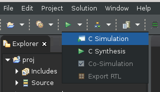
緑色の [Run] コマンド (
) をクリックして、デザインを合成します。緑色の [Run] コマンド (
) の横にあるドロップダウン リストをクリックし、Co-simulationリンクをクリックしてから、Channel (PIPO/FIFO) Profilingオプションを選択し、ポップアップ表示されたウィンドウでOKをクリックして C/RTL コシミュレーションを実行します。このデザインでデッドロックが検出されると、GUI は自動的に Dataflow Viewer を起動します (次の図を参照)。
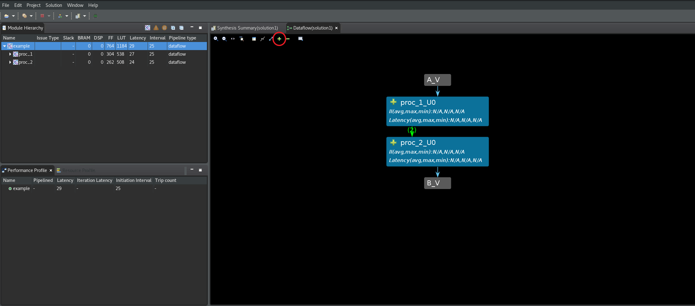
Dataflow Graph のツールバー メニューにある緑色の
+コマンドをクリックし、デザインのすべてのチャネルおよび下位プロセスを展開します。デッドロックが発生したプロセスは、グラフの中で赤く表示されます (次の図を参照)。いっぱいのチャネルはグラフ内に赤い矢印で表示され、空のチャネルはグラフ内に白い矢印で表示されます。[Channel] 表ではさらに、いっぱいまたは空のチャネルの深さが赤でハイライトされます。Cosim Max Depth列とDepth列の両方を使用すると、サイズ変更の必要がある最初のチャネルは data_channel1 であることがわかります。このチャネルは、プロデューサー proc_1_1_U0 と、コンシューマー proc_1_2_U0 プロセスの間にあります (ProducerとConsumerの列に表示されています)。
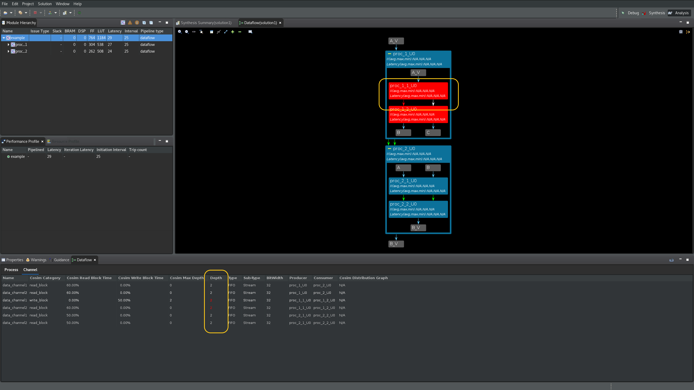
この FIFO サイズを変更するには 3 つの方法があり、この演習ではそれぞれを順番に説明します。
手動の FIFO サイズ変更
グローバルな FIFO サイズ変更
自動の FIFO サイズ変更
手動の FIFO サイズ変更¶
FIFO や PIPO の深さが十分でないことによるパフォーマンス低下は、常に少なくとも 1 つのプロセスが、いっぱいの FIFO でブロックされる原因となります。普通、FIFO の深さの適切な値を決めることはできません。幸いなことに、RTL 協調シミュレーションでは、各チャネルで達成された深さの最大値もレポートされるので、FIFO の深さを任意の大きな値を割り当てておいたとしても、シミュレーションで達成できた最大値にいつでも変更できます。また、FIFO や PIPO の深さを増やしてもパフォーマンスが低下することはなく、単に追加リソースが消費されるだけです。
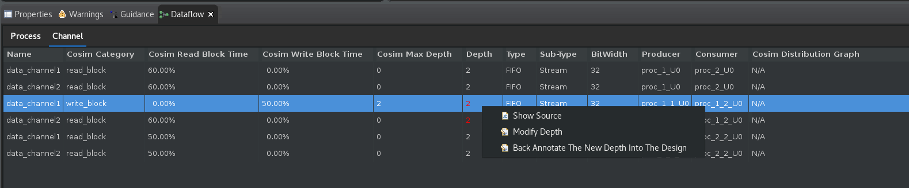
説明したように、プロデューサー proc_1_1_U0 とコンシューマー proc_1_2_U0 プロセスの間にある data_channel1 のサイズを変更する必要があります。ブロックされた FIFO のサイズを変更するには、次の手順に従います。
上の図のように、ハイライトされた data_channel1 の行を右クリックし、
Modify Depthオプションを選択します。次のような [Modify Depth] ダイアログ ボックスが開きます。
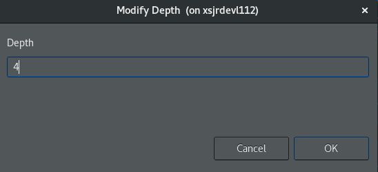
新しい深さを 4 (2 の倍) に設定し、
OKボタンをクリックします。GUI に、協調シミュレーションを再実行する必要があるかどうかをたずねるメッセージが表示されます。FIFO の深さの値を変更し終わっていないので、
Noをクリックします。デッドロックの原因となっている data_channel2 についても同じ作業を繰り返します。
GUI に、協調シミュレーションを再実行する必要があるかどうかをたずねるメッセージが表示されます。
Yesをクリックし、Channel (PIPO/FIFO) Profilingオプションを選択してからOKをクリックし、協調シミュレーションを開始します。C/RTL 協調シミュレーションが再度実行され、デザインがまだデッドロックしていることがレポートされます (次の図を参照)。
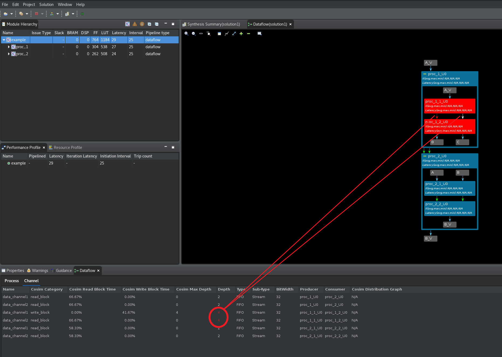
次に上記の手順を繰り返し、data_channel1 と data_channel2 の深さを 10 に変更します。C/RTL 協調シミュレーションを再実行し、デッドロックがこれらのチャネルではなく、プロセス proc_1_U0 と proc_2_U0 の間のチャネルに移動していることを確認します (次の図を参照)。

これらのチャネルに対し、FIFO のサイズ変更手順を繰り返し、深さを 10 に設定してから、C/RTL 協調シミュレーションを再実行します。デッドロックがプロセス proc_2_1_U0 と proc_2_2_U0 の間のチャネルに移動したことに注意してください (次の図を参照)。
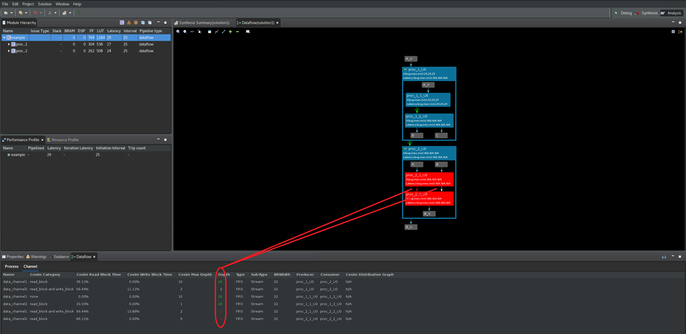
これらのチャネルに対し、FIFO のサイズ変更手順を繰り返し、深さを 10 に設定してから、C/RTL 協調シミュレーションを再実行します。デッドロックが解消されたことに注目してください (次の図を参照)。
ヒント: デッドロックの問題が解決されたため、Dataflow Graph が自動的に表示されない可能性があります。Dataflow Graph ビューアーを手動で開く必要がある場合があります。

上の図では、実際に深さ 10 を必要とするチャネルは 3 つのみである点に注意してください。これは、Cosim Max Depth と Depth の列を比較すると確認できます。その他のチャネルはデフォルトの深さで問題なく、深さの値を大きくする必要はありません。
重要: デッドロックは解決されましたが、問題解決のために設定した新しい FIFO の深さは、ソース コードにバックアノテートされていません。ここで Vitis HLS GUI を終了すると、この設定は失われます。ソース コードに新しい深さの値をバックアノテートすることにした場合は、このチュートリアルの次の段階に進むときに、あとで元に戻す必要があるので注意してください。
ソース コードにソリューションをバックアノテートするには、新しい深さの値が必要なチャネルをすべて選択し (Ctrl キーを押しながらマウスでチャネルを選択)、次の図のように
Back Annotate the New Depth into the Designオプションを選択し、Nextをクリックします。
 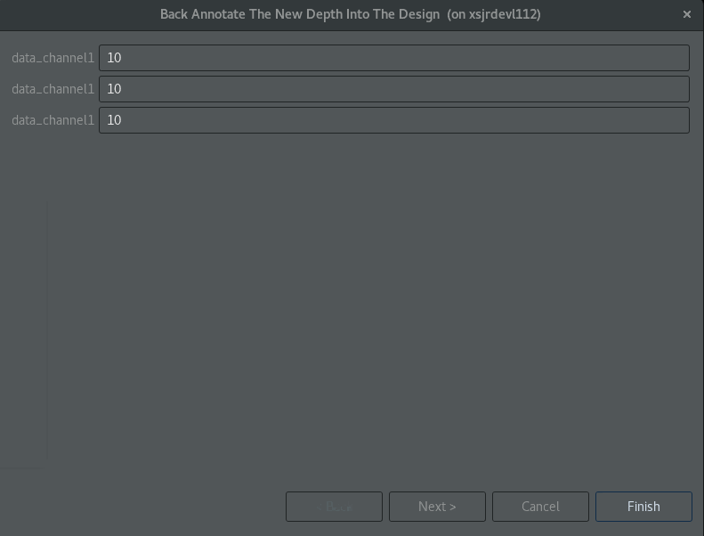
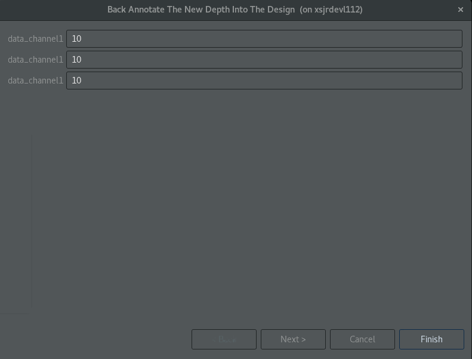
新しいウィンドウが開き、デザインのソース コードに挿入されるプラグマという形で変更内容が表示されます。この新しいプラグマ設定には、このプラグマが Vitis HLS によって挿入されたことを示すコメントが含まれる点に注意してください (次の図を参照)。

バックアノテートの各ステップのあと、GUI にデザインを再合成するかどうかを尋ねるメッセージが表示されます (新しいプラグマが追加されたため)。Yes をクリックしてデザインを再合成します。次に、緑色の [Run] コマンド ( ) の横にあるドロップダウン リストをクリックし、
) の横にあるドロップダウン リストをクリックし、Co-simulation リンクをクリックし、Channel (PIPO/FIFO) Profiling オプションを選択してから、ポップアップ表示されるウィンドウで OK をクリックして C/RTL 協調シミュレーションを実行します。新しいプラグマ設定でデッドロックが解決されていることを確認します。
重要: チュートリアルの次のステップに進む前に、上記のアノテーションのステップを必ず元に戻してください。Explorer タブで example.cpp をダブルクリックし (下図)、右端にある Directives タブを選択します。このタブに、最後のステップで追加された新しいプラグマが表示されます。各プラグマを右クリックし、Remove Directive を選択すると、ソース ファイルから削除されます。
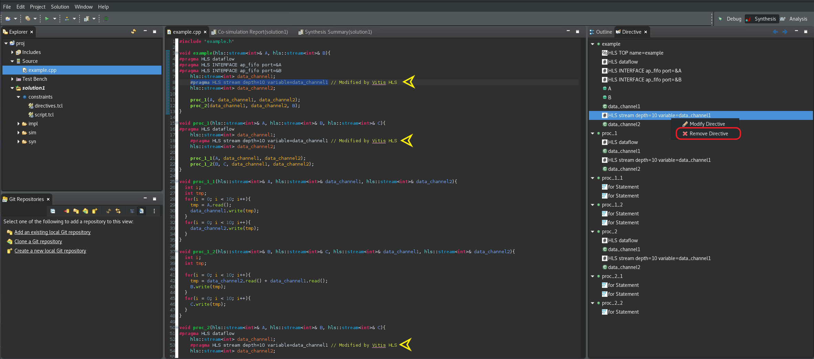
グローバルな FIFO サイズ変更¶
Global FIFO サイズ変更フローを使用するには、最初からやり直す必要があります。Vitis HLS GUI を終了し、コマンド ラインで次を実行し、再起動します。
vitis_hls -p script.tcl次の手順に従ってください。
緑色の [Run] アイコン (
) の横にあるドロップダウンの矢印をクリックし、C Simulationを選択して表示されるウィンドウでOKをクリックします。csim が警告メッセージを出さずに正常に終了していることを確認します。
C シミュレータがコンソールに出力する hls::stream の深さの最大値を確認し、書きとめます。
The maximum depth reached by any of the 26 hls::stream() instances in the design is 40すべての FIFO の深さが、C シミュレーションによってレポートされた最大値になるように設定します。トップ メニューの
Solutionリンクをクリックし、Solution Settingsを選択すると、深さの最大値を設定できます (次の図を参照)。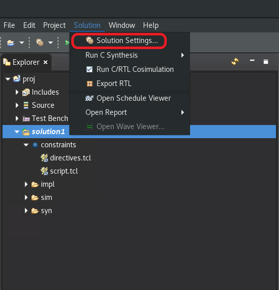
Solution SettingsウィンドウのGeneralで、[Configuration Settings] でconfig_dataflowまでスクロールし (次の図)、override_user_fifo_depthの値を 40 に設定します。OKをクリックして、この新しいコンフィギュレーションを設定します。
緑色の [Run] コマンド (
) をクリックして、C 合成を再実行します。緑色の [Run] コマンド (
) の隣にあるドロップダウン リストから Co-Simulationを選択し、C/RTL 協調シミュレーションを再実行します。表示されるウィンドウでOKをクリックします。今回はデッドロックは発生せず、C/RTL 協調シミュレーションはエラーもなく終了します。
Co-simulation Reportに移動し、[Daraflow] アイコンの横にある一番上の関数を右クリックし、Open Dataflow Viewerを選択して Dataflow Viewer を再起動してください。次に、Dataflow Viewer の [Channel] 表で、
Cosim Max DepthとDepthの列の深さを比較します。正しい深さは、Cosim Max Depthの列で確認できます (次の図を参照)。これは、このデザインのすべての FIFO に必要な深さです。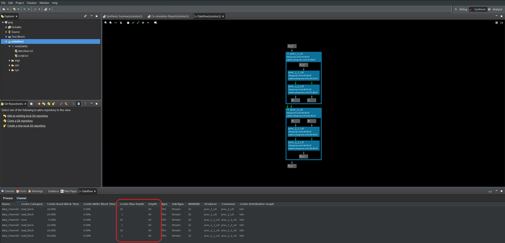
これで、確認した
Cosim Max Depthをソース コードのプラグマ設定として手動でバックアノテートできるようになりました。
自動の FIFO サイズ変更¶
3 つのアプローチのうち、自動 FIFO サイズ変更が最も簡単です。ただし:
協調シミュレーションを繰り返し実行する必要があるため、収束までに時間がかかる場合があります。
発見的アルゴリズムなので、場合によっては収束しないこともあります。
このアルゴリズムは、パフォーマンスが向上しなくなるまで、書き込みをブロックする FIFO の深さを自動的に増やします。一部の FIFO の深さを妥当な範囲を超えて増加させる可能性があるのでユーザーの確認が必要です。
グローバル FIFO サイズ変更フローを使用するには、最初からやり直す必要があります。Vitis HLS GUI を終了し、コマンド ラインで次を実行し、再起動します。
vitis_hls -p script.tcl次の手順に従ってください。
自動の FIFO サイズ変更をイネーブルにするには:
緑色の [Run] コマンド (
) をクリックして、C 合成を再実行します。緑色の [Run] コマンド (
) の隣にあるドロップダウン リストから Co-Simulationを選択し、C/RTL 協調シミュレーションを実行します。Co-simulation Dialogで、Dynamic Deadlock Preventionオプションを選択します (次の図を参照) 。OKをクリックして、C/RTL 協調シミュレーションを開始します。
C/RTL 協調シミュレーションは、デッドロックの原因となるチャネルに対して適切な FIFO サイズを検出する間しばらく実行されます。しばらくして、協調シミュレーションが正常に終了すると停止します。
Dataflow Viewer を再起動すると、[Process] および [Channel] の表の横に新しい
FIFO Sizing表が表示されます。この新しい表は、アルゴリズムによって決定された新しい FIFO サイズを記録します。プラグマや指示子を使用して、ソース コード内で手動でこれらの FIFO サイズをバックアノテートできます。

まとめ¶
まとめると、Dataflow Viewer では、次のスループット解析タスクを利用できます。
グラフには、DATAFLOW 領域の全体的なトポロジが表示され、どのタイプのチャネル (FIFO/PIPO) が DATAFLOW 領域のタスク間通信のために推論されたかが示されます。各チャネルおよびプロセスを解析すると、デッドロックや FIFO のサイズが適切でないためにスループットが小さいなどの問題を解決するのに役立ちます。
協調シミュレーションのデータがあると、シミュレーション過程で FIFO の最大サイズを確認することにより、FIFO のサイズを決定する際の基準となるので、FIFO サイズの問題を解決できます。また、協調シミュレーションでは、自動デッドロック検出により、デッドロックに関係するプロセスおよびチャネルがハイライトされるので、問題をすばやく見つけて修正できます。
協調シミュレーション後にレポートされるデータには、FIFO のサイズだけでなく、プロセスおよびチャネルごとに、入力を待っていたり、出力の書き込みがブロックされたりしているストール時間も示されます。このグラフがあると、これらの問題を理解し、プロデューサーが高速でコンシューマーが高速 (またはその逆) の状況に対処するためチャネルのサイズをどのように管理すればよいかを判断するのに役立ちます。また、DATAFLOW 領域の真ん中で入力から読み出すことがパフォーマンスにどのように影響するかを理解するのにも有益です。これがパフォーマンスに影響する状況はよくあります。
Copyright© 2021-2022 Xilinx